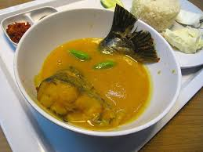

Perkenalkan saya Apdione Yona Kristanto dari prodi Informatika angkatan 23. Saya berasal dari Lahat Sumatera Selatan. Saya berasal dari keluarga yang sederhana. Ayahku buruh tani, dan ibuku bisa di katakan hanya mengurus kami di rumah. Aku memiliki 2 saudara laki-laki, dimana keduanya memiliki rentang umur yang cukup jauh. Membahas tentang perkuliahan, sebenarnya saya tidak terlalu tertarik dengan jurusan informatika. Aku memilih prodi ini dikarenakan hobiku bermain game saja. Selebihnya mungkin akan mengalir. Berbicara tentang hobi, aku memiliki hobi seperti orang biasanya. Bermain alat musik seperti gitar dan piano, bermain game dan lainya. Sepertinya aku emang suka bermain. Mungkin perkenalanku cukup sampai sini, selanjutnya aku akan memilih alasanku mengambil jurusan ini dan sedikit menjelaskan kota asalku. Mohon di baca.
Alasanku memilih prodi informatika:
Langsung saja aku berikan info menarik tentang kotaku tinggal sebelumnya
| Hal menarik | Fakta menarik |
|---|---|
|
Keunikan utama air terjun ini terletak pada struktur bertingkat empat yang menyerupai anak tangga, di mana air mengalir deras melalui setiap tingkatnya. Bentuk memanjang ini memberikan pemandangan eksotis dan menjadi daya tarik bagi para pengunjung. Sebelum diresmikan sebagai tempat wisata pada Oktober 2017, lokasi ini dikenal angker dan diyakini memiliki aura mistis yang kuat, sehingga jarang dikunjungi warga. Namun, berkat inisiatif Karang Taruna desa, area ini disulap menjadi destinasi rekreasi yang ramai pengunjung. Sayangnya, pada akhir tahun 2019, air bah dari hulu Sungai Lematang menghantam area ini, menyebabkan aliran air terhenti dan mengurangi daya tariknya sebagai objek wisata. |
|
Kabupaten Lahat di Sumatera Selatan dikenal memiliki sejumlah air terjun (curug) yang memukau dengan keindahan alamnya. Berikut beberapa fakta menarik tentang beberapa air terjun di Lahat: Air Terjun Curup Maung Terletak di Desa Rinduhati, Kecamatan Gumay Ulu, air terjun ini memiliki ketinggian sekitar 80 meter. Dikelilingi oleh tebing batu kokoh dan pepohonan hijau rimbun, Curup Maung menawarkan pemandangan alam yang menakjubkan. Air Terjun Gunung Nyawe Berada di Desa Talang Sejemput, Kecamatan Pulau Pinang, air terjun ini memiliki ketinggian sekitar 90 meter. Dinding napal berwarna cokelat kekuningan menambah keindahan alami tempat ini. Nama 'Gunung Nyawe' diberikan karena air terjun ini dianggap sebagai penyambung nyawa bagi masyarakat setempat. Dan masih banyak curug lainnya. |
|
Citimall Lahat adalah pusat perbelanjaan pertama dan terbesar di Kabupaten Lahat, Sumatera Selatan. Dibuka pada 21 Desember 2016, mal ini merupakan Citimall keempat di Indonesia setelah Ketapang, Kuala Kapuas, dan Baturaja. Terletak di Jalan Raya Lintas Tengah Agung, Bandar Agung, Kecamatan Lahat, Citimall Lahat memiliki luas area sekitar 33.491 meter persegi dengan luas area sewa bersih (NLA) sebesar 11.872 meter persegi. Mal ini beroperasi setiap hari mulai pukul 10.00 hingga 22.00 WIB. Beberapa tenant utama yang hadir di Citimall Lahat antara lain Hypermart sebagai anchor tenant, Optik Melawai, Funworld, California Fried Chicken (CFC), Mokko Factory, Kewarung, Siss Bakery and Café, Karisma Book Store, Pojok Busana, Gabino, dan Platinum Cineplex. |
|  | Tempoyak adalah hasil fermentasi daging buah durian yang menjadi bagian integral dari kuliner tradisional di Lahat, Sumatera Selatan. Proses fermentasi ini menghasilkan rasa asam khas dan aroma yang kuat, menjadikannya bahan dasar dalam berbagai hidangan lokal. Salah satu hidangan khas yang populer di Lahat adalah Salai Tempoyak. Hidangan ini menggabungkan ikan salai—biasanya ikan patin atau baung yang diasapi—dengan tempoyak sebagai bumbu utama. Proses pengasapan ikan memberikan cita rasa smoky yang khas, sementara tempoyak menambahkan sentuhan asam dan aroma durian yang unik. Kombinasi ini menciptakan rasa yang kaya dan kompleks, khas masakan tradisional Lahat. |
|
Pempek, makanan khas Sumatera Selatan yang terbuat dari campuran ikan dan tepung sagu, telah menjadi bagian integral dari kuliner di Kabupaten Lahat. Meskipun asalnya dari Palembang, pempek di Lahat memiliki cita rasa dan variasi yang khas, berkat sentuhan lokal dan adaptasi resep tradisional. |